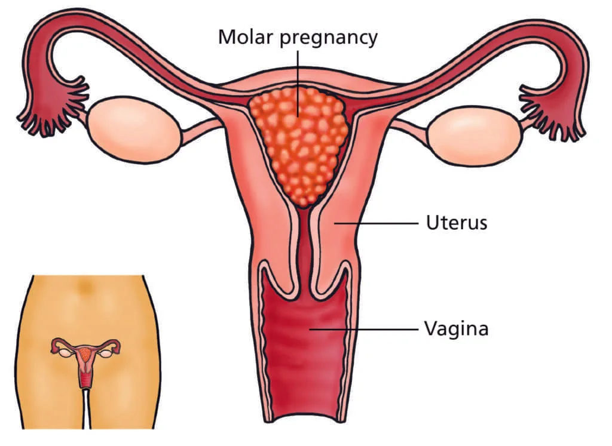

Expanded Nursing Uganda Explanation
Hydatidiform mole should be reviewed through safe maternal and newborn assessment, early recognition of danger signs, respectful communication and timely referral. Connect the definition to vital signs, bleeding, fetal or newborn wellbeing, patient education and local protocol requirements.
01 HYDATIDIFORM MOLE (VESICULAR)
This condition occurs when the uterus is filled with a mass of cysts, and the chorionic villi grows into a mass of cysts. This process begins around 6 weeks of pregnancy, and the embryo is absorbed.
This results in the formation of clusters of small cysts , resembling hydatid cysts. It is considered a benign neoplasm of the chorion with malignant potential .
Incidence : Prevalence varies geographically and ethnically. Higher incidence is observed in Asian countries (Philippines, China, Indonesia, Japan, India), Central and Latin America, and Africa (Philippines: 1 in 80 pregnancies; lowest in Europe: 1 in 752, USA: 1 in 2000; India: 1 in 400).
02 Etiology of Hydatidiform mole
The exact cause is unknown , but it’s linked to ovular defects, sometimes affecting one ovum in twin pregnancies. Contributing factors and hypotheses include:
- Age : Highest prevalence in teenage pregnancies and women over 35.
- Race/Ethnicity: Variable prevalence across different populations.
- Nutrition : Inadequate protein and animal fat intake (especially in Asian countries), and low carotene intake may increase risk.
- Immune Dysfunction : Suggested by elevated gamma globulin levels (without liver disease) and increased association with AB blood group (lacking ABO antibodies).
- Cytogenetic Abnormalities : Complete moles typically have a 46XX karyotype (85%), with chromosomes solely derived from the father (androgenesis). The maternal nucleus may be absent or inactive. Less frequently, karyotypes may be 46XY or 45X. The paternal:maternal chromosome ratio correlates with the severity of molar change (complete: 2:0; partial: 2:1).
- Recurrence: Prior hydatidiform mole increases recurrence risk (1-4%).
03 Clinical Features of Hydatidiform mole
Symptoms : Often mimics early pregnancy or miscarriage.
- Vaginal Bleeding (90%) : May be mixed with gelatinous fluid from ruptured cysts (“white currants in red currant juice”).
- Abdominal Pain : May be caused by uterine overstretching, concealed hemorrhage, uterine perforation (rare), infection, or uterine contractions.
- Constitutional Symptoms : Unexplained illness, excessive vomiting (hyperemesis in 15%), breathlessness (pulmonary trophoblastic embolism in 2%), and thyrotoxic features (tremors, tachycardia in 2%) due to increased chorionic thyrotropin.
- Grape-like Vesicles: Expulsion of these is diagnostic, but often the mole is unsuspected until expulsion.
- Absence of Quickening .
Signs :
- Early Pregnancy Signs : Present initially.
- Patient Appearance : Appears sicker than expected.
- Pallor : May be disproportionate to visible blood loss (concealed hemorrhage, iron or folate deficiency).
- Preeclampsia (50%) : Hypertension, edema, proteinuria; rarely convulsions.
- Uterine Size (70%) : Larger than expected for gestational age due to vesicle growth and concealed hemorrhage; 20% corresponds; 10% smaller.
- Uterine Consistency: Firm and elastic (“doughy”).
- Absence of Fetal Signs: No fetal parts, movements, ballottement, or heart sounds.
- Ovarian Enlargement (25-50%) : Theca lutein cysts.
Vaginal Examination:
- No Ballottement.
- Vesicles in Discharge : Pathognomonic.
- Cervical Os Open : Blood clots or vesicles may be present.
- Complete Blood Count, ABO/Rh Typing.
- Liver, Renal, and Thyroid Function Tests.
- Ultrasound : “Snowstorm” appearance is characteristic (Fig. 16.17). Doppler ultrasound, and imaging of liver, kidneys, and spleen may be used.
- Quantitative hCG: High urine hCG (positive pregnancy test, diluted to 1:200-1:500 beyond 100 days gestation); rapidly increasing serum hCG (>100,000 mIU/mL) is typical. Values exceeding twice the median (MOM) for gestational age are significant.
- X-Ray : Abdominal X-ray (if uterine size >16 weeks) to rule out fetal shadow; chest X-ray to detect pulmonary embolism.
- CT/MRI: Not routinely recommended.
- Histological Examination : Definitive diagnosis via examination of products of conception.
Differential Diagnosis:
Serum hCG and ultrasound are crucial for differentiation.
- Threatened Abortion : Persistent dark vaginal bleeding and disproportionate uterine size.
- Fibroid/Ovarian Tumor with Pregnancy : Disproportionate uterine enlargement.
- Multiple Pregnancy : Early preeclampsia,
Types of Hydatidiform mole
Complete moles :
- Complete moles result from fertilization of an egg that has lost its genetic material or an egg that lacks genetic material being fertilized by a sperm.
- In complete moles, there is no embryo or normal placental tissue, and the entire mass consists of abnormal trophoblastic tissue .
- These moles are typically characterized by the absence of fetal tissue, with the uterus filled with cystic structures resembling grapes.
- Complete moles are associated with a higher risk of complications and may have a more pronounced impact on health compared to partial moles.
Partial moles :
- Partial moles occur when an egg is fertilized by two sperm or when two sperm fertilize a single egg with some genetic material.
- In partial moles, there may be some fetal tissue present along with abnormal trophoblastic tissue.
- Partial moles are less common than complete moles and often have a less severe clinical presentation.
- Compared to complete moles, partial moles are less likely to lead to significant complications but still require careful monitoring and management.
04 Complications of Hydatidiform mole
I. Immediate Complications :
Hemorrhage and Shock: Hemorrhage can arise from several sources:
- Separation of Vesicles: Detachment of the vesicles from the uterine decidua can lead to concealed or revealed hemorrhage.
- Uterine Perforation : A perforating mole can cause massive intraperitoneal hemorrhage, sometimes presenting as the initial symptom.
- Evacuation Procedures: Hemorrhage can occur during mole evacuation due to uterine atony or accidental uterine injury, particularly with dilation and evacuation (D&E) or curettage following suction evacuation.
Sepsis : The risk of infection is elevated due to:
- Lack of Protective Membranes : The absence of protective membranes allows vaginal organisms easy access to the uterine cavity.
- Favorable Environment: Degenerated vesicles, sloughing decidua, and old blood create an ideal environment for bacterial growth.
- Increased Intervention: Surgical procedures increase the risk of introducing infection.
Uterine Perforation : Uterine injury can occur from:
- Perforating Mole : This can result in massive intraperitoneal hemorrhage.
- Evacuation Procedures: Perforation is a potential risk during D&E or curettage following suction evacuation.
Preeclampsia/Eclampsia : While preeclampsia is a common finding in molar pregnancies (affecting approximately 50%), eclampsia (convulsions) is a rare but serious complication.
Acute Pulmonary Insufficiency : Pulmonary embolism of trophoblastic cells (with or without villous stroma) can cause acute respiratory distress, typically beginning within 4-6 hours post-evacuation.
Coagulation Failure: Pulmonary embolization of trophoblastic cells can trigger disseminated intravascular coagulation (DIC) due to the deposition of fibrin and platelets within the vascular system.
II. Late Complications :
Gestational Trophoblastic Disease (GTD): The most significant late complication is the development of persistent GTD or choriocarcinoma. This occurs in 2-10% of complete moles.
05 Treatment in the Maternity Centre:
With the use of ultrasonography and sensitive hCG testing, diagnosis is made early in majority of the cases.
The aims/principles in the management are:
- Suction evacuation (SE) of the uterus as early as the diagnosis is made.
- Supportive therapy: Correction of anemia and infection, if there is any.
- Counseling for regular follow-up
The patients are grouped into two:
- Group A :The mole is in the process of expulsion, less common.
- Group B : The uterus remains inert (early diagnosis with ultrasonography)
A. Mole in the Process of Expulsion : (Less common)
Preferred Method: Suction evacuation (SE) under diazepam sedation or general anesthesia. Negative pressure should be maintained at 200-250 mmHg. Continuous monitoring of oxygen saturation (pulse oximetry) is essential. A large-bore IV line (e.g., 500mL Ringer’s lactate) should be established. A senior surgeon should be present.
Alternative Methods :
- Conventional D&E (dilatation and evacuation).
- Digital removal with ovum forceps under general anesthesia.
Post-Evacuation: Methergine (0.2mg IM) is administered to reduce uterine bleeding. The routine use of oxytocin is generally avoided due to the risk of trophoblastic embolization.
B. Uterus Remains Inert : (Early diagnosis via ultrasound)
Cervical Preparation : Since the cervix is closed, prior cervical dilatation is required. This can be achieved via:
- Laminaria tents (slow dilatation).
- Vaginal misoprostol (400µg PGE1, 3 hours pre-surgery).
Subsequent Evacuation : Suction evacuation (SE) follows cervical preparation.
Surgical Alternatives:
Hysterectomy : Indicated in select cases:
- Women over 35 years old.
- Women who have completed their families (regardless of age).
- Uncontrolled hemorrhage or uterine perforation during SE. Hysterectomy reduces the risk of persistent GTD by fivefold.
Hysterotomy : Rarely performed; considered in cases with profuse vaginal bleeding, an unfavorable cervix, or accidental uterine perforation during SE. Note that persistent GTD can still occur post-hysterectomy (3-5%).
Chemotherapy
While approximately 80% of patients experience spontaneous remission, chemotherapy is indicated in specific circumstances to prevent or treat persistent GTD. The decision to administer chemotherapy is based on several factors. The risk/benefit ratio of chemotherapy needs to be assessed carefully, considering patient factors (age, desire for future pregnancies) and treatment risks (toxicity).
Indications for Prophylactic Chemotherapy:
Chemotherapy is considered when:
- Elevated or Rising hCG : hCG levels fail to normalize within 10-12 weeks, or re-elevate after reaching normal levels (4-8 weeks post-evacuation).
- Post-Evacuation Hemorrhage : Suggests persistent trophoblastic activity.
- Inadequate Follow-up Facilities : In settings with limited access to regular monitoring, prophylactic chemotherapy may be preferable to risk delayed treatment.
- Evidence of Metastasis: Regardless of hCG levels, the presence of metastases warrants chemotherapy.
- High Risk Factors: For patients with high-risk characteristics (larger molar pregnancy, presence of theca-lutein cysts, high pre-evacuation hCG), prophylactic chemotherapy may be considered.
Chemotherapy Regimens:
- Methotrexate : 1 mg/kg/day IV or IM on days 1, 3, 5, and 7, with folic acid (0.1 mg/kg IM) on days 2, 4, 6, and 8. This regimen is repeated every 7 days for a total of three courses. hCG should decrease by at least 15% within 4-7 days of methotrexate administration.
- Actinomycin D : Intravenous actinomycin D (12 µg/kg/day) for 5 days is an alternative regimen. It’s considered less toxic than methotrexate.
Contraceptive Advice :
- Post-Evacuation : Patients are advised to avoid pregnancy for at least one year to allow for adequate monitoring and to avoid confounding hCG levels.
- Contraceptive Methods : Combined oral contraceptives are acceptable once hCG levels are normal. DMPA injections are also safe. Barrier methods are suitable alternatives. IUDs are contraindicated due to the risk of irregular bleeding. Surgical sterilization may be an option for women who have completed their families. Ultrasound confirmation of pregnancy is advised to ensure pregnancy and rule out persistent GTD.
Post-Evacuation Procedures:
- Histopathological Examination : The evacuated tissue and the uterus (if hysterectomy is performed) should be sent for histopathological examination.
- Rh(D) Immunoglobulin: Rh-negative, non-immunized patients should receive Rh(D) immunoglobulin.
Follow-Up Care:
Mandatory follow-up is essential for at least one year to monitor for persistent trophoblastic neoplasia (PTN) or choriocarcinoma, as the majority of cases develop within this period.
The primary objective is to detect persistent GTD (20-30%). hCG levels should return to normal within 3 months post-evacuation.
Follow-up Schedule:
- Initial : Weekly check ups until serum hCG is negative (usually 4-8 weeks).
- Subsequent : Monthly checkups for 6 months after negative hCG.
- Chemotherapy Patients: Yearly follow-up for 1 year after normal hCG levels.
06 Lets say its a question in an exam
- Aims of Management: Complete evacuation of molar pregnancy. Prevention of complications (hemorrhage, infection, DIC). Early detection and management of persistent trophoblastic disease (PTD). Management at the Maternity Centre (Pre-Referral): Assessment : Detailed history including LMP, menstrual cycle regularity, symptoms (amount and character of vaginal bleeding, abdominal pain, uterine size), previous pregnancies, family history of GTD. Physical examination: Vital signs (BP, pulse, respiration, temperature), abdominal examination (uterine size, tenderness, consistency), pelvic examination (speculum exam to assess vaginal bleeding, cervical changes). Preliminary β-hCG testing if not already obtained. Stabilization : Assessment for hypovolemic shock if significant bleeding (tachycardia, hypotension). IV fluid resuscitation with crystalloids (e.g., normal saline) if needed to maintain hemodynamic stability. Oxygen supplementation if necessary. Continuous monitoring of vital signs. Referral Preparation : Contact the receiving hospital to confirm acceptance and availability of resources. Prepare a detailed referral note including all pertinent clinical information. Arrange for appropriate transportation (ambulance if unstable; private transport if stable). Referral Note : Patient demographics and medical history Presenting complaint and findings of the physical exam β-hCG level (if available) Results of any preliminary investigations (e.g., ultrasound) Assessment of the patient’s overall condition Reasons for referral My assessment and plan of care Transportation : Ensure safe and timely transport; accompany patient if possible. Hospital Management (Post-Referral): Reception & Admission : (As before) Stabilization : (As before, more detailed monitoring and interventions) Doctor’s Orders & Investigations : Complete blood count (CBC) to assess for anemia. Blood type and cross-match in case of significant blood loss requiring transfusion. Coagulation profile (PT, PTT, INR, fibrinogen) to assess for DIC. Liver function tests (LFTs) and kidney function tests (KFTs) to assess organ function. Chest X-ray to rule out lung metastasis. Serial β-hCG measurements to monitor disease activity. Transvaginal or abdominal ultrasound to confirm diagnosis, assess for invasion, and rule out other pathology. Medical Management : Blood transfusion : If significant blood loss necessitates it. Methotraxate : If indicated (e.g., for incomplete evacuation, low-risk PTD) Dosage would depend on patient weight and renal function; it’s generally given IM or IV in multiple doses, with close monitoring of renal and liver function as well as blood counts. For example, 50mg/m2 of body surface area might be an initial dose. Dacarbazine (DTIC): An alternative chemotherapeutic agent for PTD management, used in situations where methotrexate is contraindicated or ineffective. The dosage regimen depends on several factors, including type and extent of disease, patient performance status, and prior treatment. Antibiotics : Broad-spectrum antibiotics (e.g., ampicillin/sulbactam or clindamycin/gentamicin) prophylactically to prevent infection, especially if there’s significant vaginal bleeding or signs of infection. Pain Management : Analgesics (e.g., paracetamol or NSAIDs) as needed for post-operative pain. Surgical Management : Suction Curettage (D&C): The primary surgical method for removing the molar tissue. It involves inserting a cannula into the uterus and using suction to evacuate the contents. The uterine cavity is then curetted to ensure complete removal of the molar tissue. Hysterectomy : May be considered if the patient desires sterilization, has significant risk factors for PTD, or if there are complications during suction curettage (e.g., uterine perforation). This would involve the surgical removal of the uterus. Nursing Care : Continuous monitoring of vital signs (BP, pulse, respiration, temperature). Assessment of vaginal bleeding (amount, color, consistency). IV fluid management and administration of medications as prescribed. Pain management and comfort measures (analgesics, repositioning). Monitoring for signs and symptoms of infection (fever, chills, abdominal tenderness). Education on post-operative care (wound care, hygiene, activity restrictions). Emotional support and counseling. Monitoring for complications (hemorrhage, infection, thromboembolic events). Accurate documentation of all assessments, interventions, and responses. Close monitoring of laboratory values (hCG levels, CBC, coagulation studies). Patient and family teaching related to the disease process, treatment, and long-term monitoring. Assistance with ambulation and activities of daily living as the patient’s condition allows. Discharge Advice : After a few days post-surgery, and once the patient is stable and hCG levels are beginning to fall, discharge planning will start. Discharge instructions will include: Regular follow-up appointments to monitor hCG levels. Instructions on recognizing signs and symptoms of complications (hemorrhage, infection, fever, etc.) Contraceptive advice (avoiding pregnancy for at least 1 year). Information about PTD and the need for long-term monitoring. Information about support groups and mental health resources.
07 Nursing Uganda Clinical Lens
Use Hydatidiform mole as a practical nursing topic, not only a memorized definition. Read the topic through the safety of two patients: the mother and the fetus or newborn.
- What to understand first: define hydatidiform mole, identify the normal or expected pattern, then explain what changes when the patient is unwell.
- Why it matters in care: the nurse must recognize risk early, explain findings clearly, document accurately and know when to escalate.
- How to revise it: connect each point to assessment, nursing diagnosis or care problem, intervention, rationale and evaluation.
08 Assessment Guide
- Maternal vital signs, bleeding, pain, contractions, uterine tone and danger signs.
- Fetal or newborn wellbeing, feeding, temperature, breathing and activity.
- History of pregnancy, parity, medications, allergies, investigations and referral risks.
09 Nursing Priorities, Rationales and Outcomes
- Recognize danger signs early and escalate without delay.
- Provide respectful communication, privacy, infection prevention and clear documentation.
- Teach the mother what to monitor at home and when to return urgently.
The rationale for these priorities is patient safety: nursing actions should prevent deterioration, reduce discomfort, support recovery and create clear evidence for the next caregiver.
- Expected outcome: Mother and baby remain stable, danger signs are acted on early, and the family understands follow-up instructions.
10 Patient Teaching and Revision Check
- Explain hydatidiform mole in simple language the patient or caregiver can repeat back.
- Teach warning signs, medicine or follow-up instructions, hygiene or lifestyle points where relevant.
- For exams, prepare a short answer using: definition, causes or risk factors, signs, assessment, management, complications and prevention.
- For ward practice, document baseline findings, actions taken, patient response and the plan for review.
Illustrations and Diagrams (1)

Related Video Lectures
Watch nursing lecture videos on YouTube for this topic. Opens in a new tab.
Watch on YouTubeExternal link: YouTube may use its own cookies and terms. Nursing Uganda is not affiliated with YouTube.